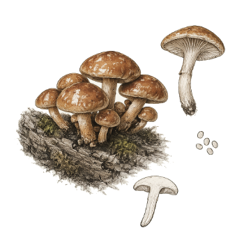

Ficha de especie · Pholiota nameko
Nameko
Pholiota nameko
Una seta que se cultiva en aserrín. Es la especie con menos información sólida de la colección, así que aquí separamos lo que sabemos de lo que falta.
- Etapa
- Perfil en estudio. Sin validación local todavía.
- Nombre
- Usamos Pholiota nameko. Algunas fuentes la llaman Pholiota microspora.
- Origen
- Tenjo, Cundinamarca, Colombia

Lo que ya sabemos.
Resumen de estudios publicados. Ninguna cifra está validada en nuestras cámaras.
-
Su nombre no está resuelto
GBIF acepta Pholiota nameko y Pholiota microspora a la vez. Index Fungorum favorece nameko y otras fuentes prefieren microspora. Mostramos los dos hasta confirmarlo.
-
Crece en aserrín con salvado
Un estudio coreano (Kim et al. 2006) usó aserrín de roble y salvado de trigo en proporción 8 a 2, en botellas de 850 g. El micelio creció mejor a 25 °C y pH 5,0, y las mejores setas salieron hacia los 30 días de incubación.
-
Se conserva mejor en frío
Minato et al. (2014) guardaron la seta a 5 °C más de una semana. A 25 °C se pardeó en dos días.
Cuidado
No es Pholiota adiposa.
Muchos datos de fructificación que circulan, como 14 a 16 °C y más de 95 % de humedad, vienen de estudios de Pholiota adiposa, otra especie que algunos textos también llaman nameko. No los usamos en esta ficha.
Lo que aún medimos.
Hasta tener datos propios, no publicamos ajustes de cultivo como definitivos.
-
Temperatura, humedad y CO₂ de fructificación
No encontramos una fuente primaria para nameko. Los registraremos con nuestra cepa y nuestra cámara.
-
Contaminantes frecuentes
Hay reportes de Trichoderma y otros mohos, pero no pudimos leer la fuente completa. Los anotaremos lote por lote.
Esta es una ficha de especie, no una oferta. No hay producto, precio ni disponibilidad, y no hacemos afirmaciones de salud.